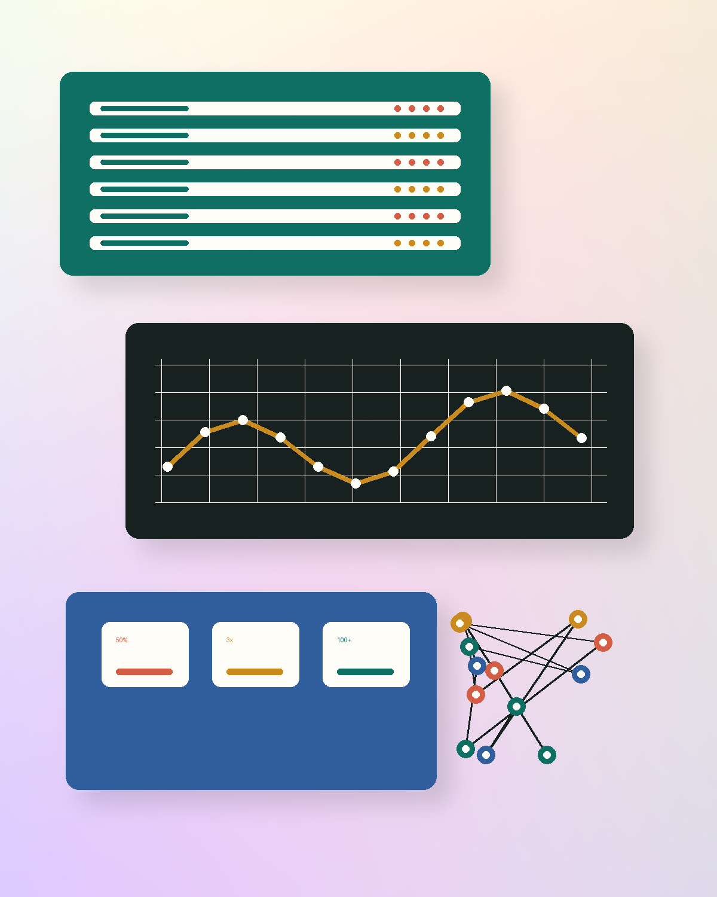

GPU 溫度診斷工具執行時間降低
軟體工程師 - GPU 平台 - AI 加速器效能
把底層系統、AI 加速器效能與工程工具串成可靠產品。
我是林士平，目前在 Google 做 GPU 伺服器平台診斷工具與穩定性驗證。過去在 MediaTek 深入 NPU 效能分析、KPI 指標設計與全端儀表板建置，喜歡把複雜系統問題拆成可觀測、可驗證、可自動化的工程流程。

Diagnostic log size reduction in one day
Dashboard 工具使用者人數
NPU 多核心效能提升
工作經驗
工程經歷
台灣科高基礎設施有限公司 (Google) - 軟體工程師 II
負責新一代 GPU 伺服器平台診斷工具 bring-up 與穩定性驗證，處理診斷工具、系統軟體、硬體與供應商之間的跨層問題。
- 解決因 log 大小限制造成的生產阻塞，一天內將 log 縮小 3 倍並解除大規模部署阻礙。
- 找出 GPU 溫度診斷工具的執行瓶頸，將執行時間降低 50%，每次約節省 30 分鐘。
- 與 NVIDIA、硬體製造商及內部團隊合作，確保快速演進平台的診斷可靠性。
聯發科技股份有限公司 (MediaTek) - 工程師
專注 NPU 效能分析、架構分析工具與自動化平台，讓效能問題能被量測、拆解與持續追蹤。
- 發現 NPU 多核心擴展性問題，提升 30-50% 效能。
- 設計效能拆解演算法與 KPI 指標，支援架構分析與競品比較。
- 建置全端儀表板平台，讓 100+ 位工程師進行效能監控與分析。
- 自動化 C model 報告生成流程，將人工處理效率提升超過 10 倍。
資策會 - 研究計畫助理
建立機器學習即服務 (MLaaS) 網站系統，支援資料上傳、即時預測與模型增量更新。
精選成果
我擅長把研究、平台與產品需求落地。
GPU 伺服器診斷工具建置
在新硬體平台快速變動的環境中，建立診斷與驗證流程，讓大規模伺服器部署更可靠。
NPU 效能拆解分析
設計效能拆解演算法與 KPI，協助架構分析、競品比較與大型模型 workload 評估。
效能監控儀表板平台
從資料管線到前端視覺化建置儀表板，支援工程團隊日常監控與決策。
大台北找 YouBike
整合 Google Maps 與 YouBike API，打造可查詢大台北站點資訊的 RWD 線上服務。
技能
技術能力
程式語言
網站與平台
AI 與工具
學歷
學歷
國立台灣大學 - 電機工程研究所計算機組碩士，GPA 4.20/4.30，排名 8/90
國立清華大學 - 電機工程學系學士，GPA 4.11/4.30，排名 8/112
論文發表
論文發表
SGAS-es: Avoiding Performance Collapse by Sequential Greedy Architecture Search with the Early Stopping Indicator. 發表於 FICC 2023，由 Springer Nature Switzerland 出版。
聯絡